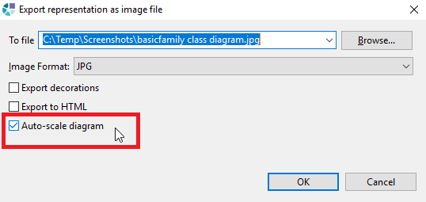
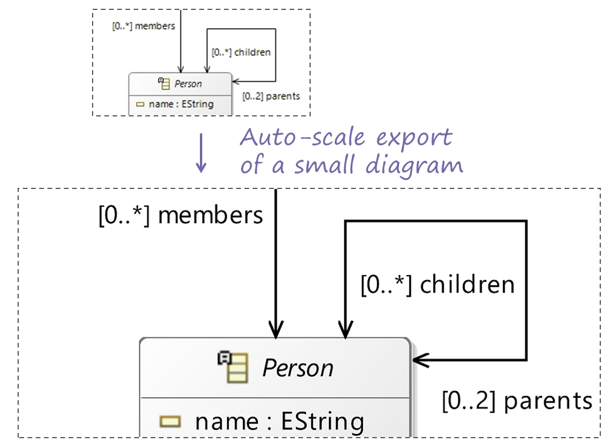
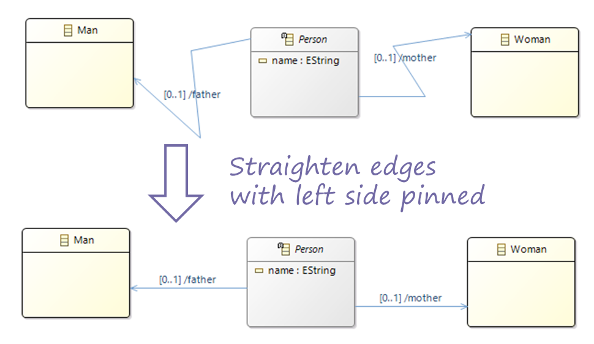
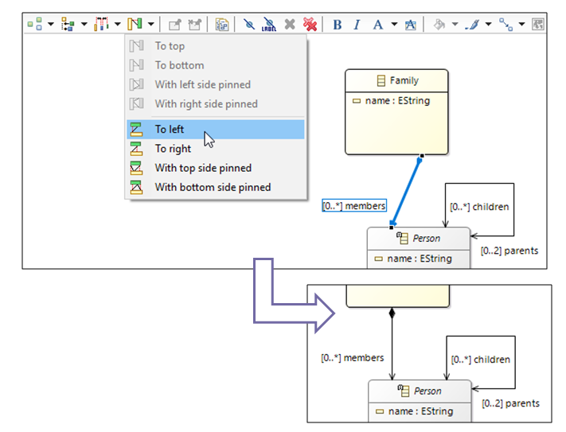
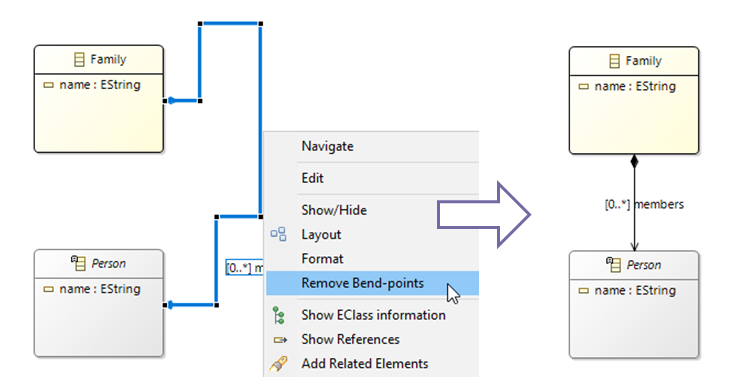

This new release brings several improvements:
A new option allows the user to export a diagram automatically scaled to the maximum size allowed by his OS.

With small diagrams this option will result in larger images (with a higher resolution). On the contrary, very large diagrams will result in smaller images (with a lower resolution).

Several new options allow the user to better arrange the layout of edges.
Four new layout actions have been added to straighten edges :
With this new actions, the chosen side of the selected edges (top, bottom, left or right) is kept unchanged: only the opposite side is moved.

A new tab-bar menu has been added to select straighten actions applicable on selected edges

These straighten action are now available even if it is not applicable on one of the selected edges. In this case it will only affect compatible edges.
The removing of bend-points (the inflection points) has been improved to also apply on rectilinear edges.

In a diagram, when selecting an edge or a node that are not fully displayed in the editor, now, the display area is not moved anymore to automatically reveal the object.
If the user wants to fully see the selected element, he may still drag the editor content using the center mouse button, the outline view or the scroll bars.
A comprehensive list of Sirius 5.1 changes can be found in the Official Release Notes.
Read What's new in Sirius 5.0 to see the new and noteworthy features of previous version.